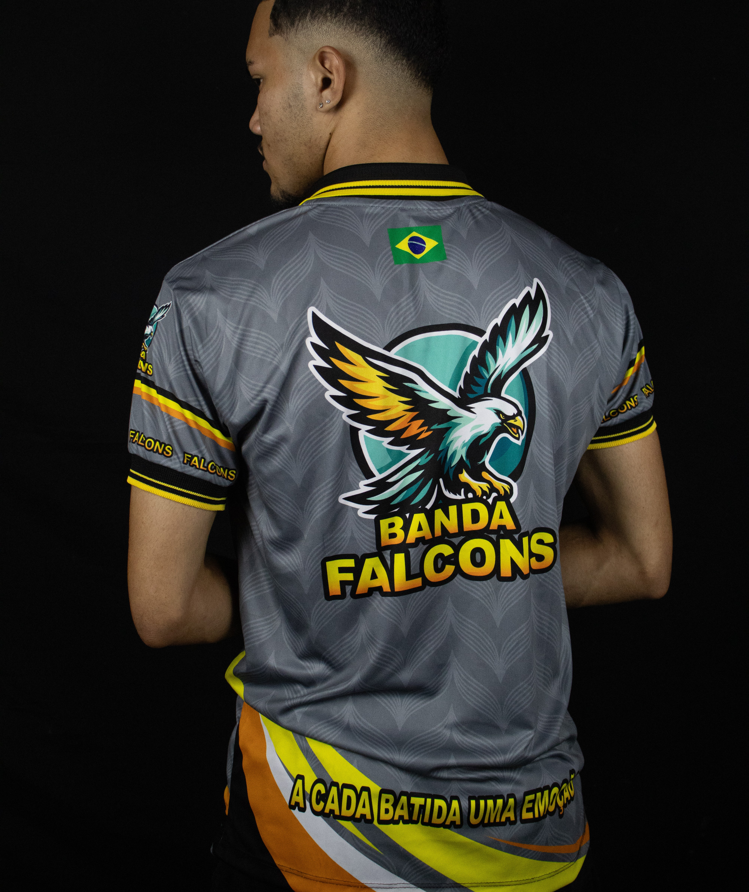
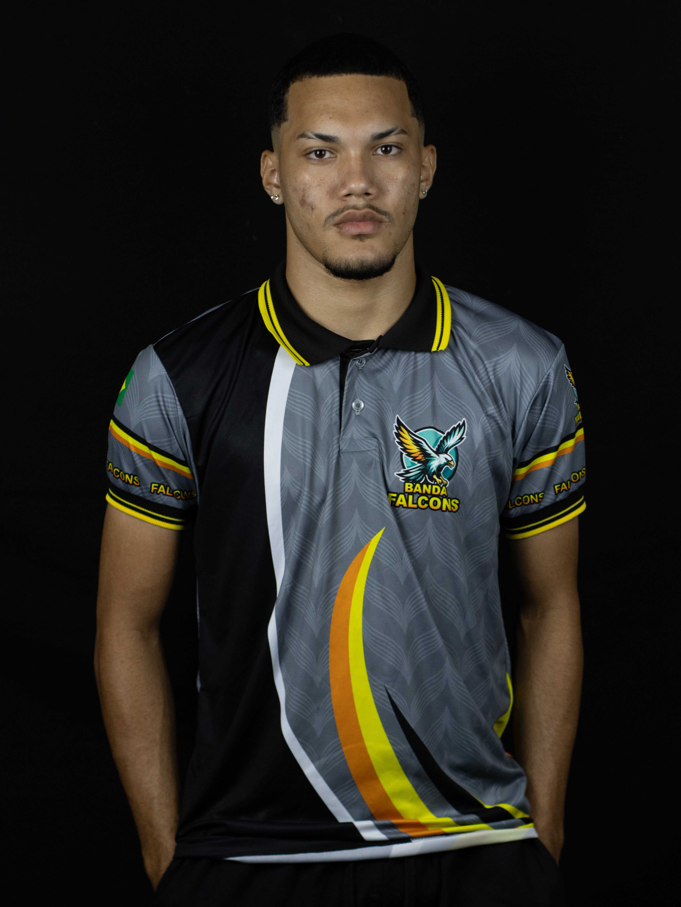
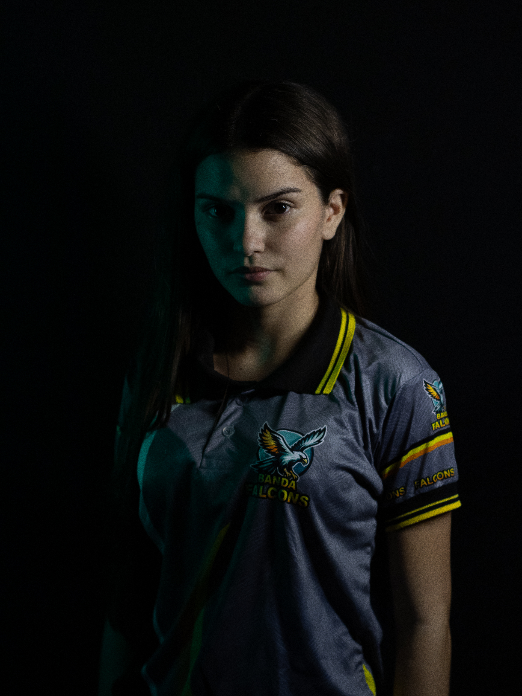
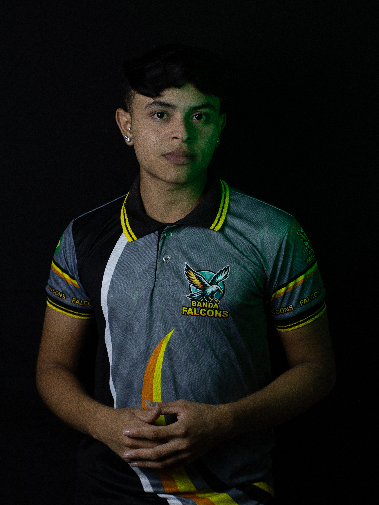
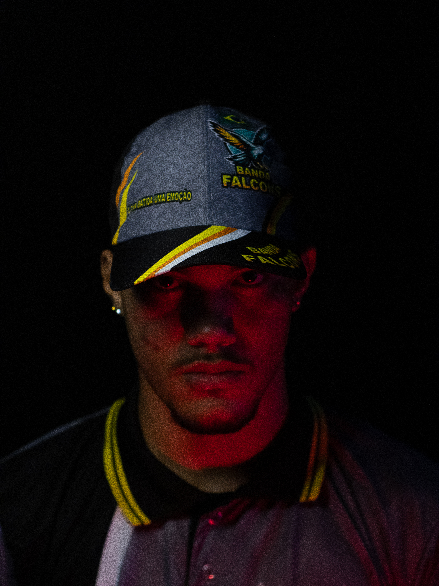
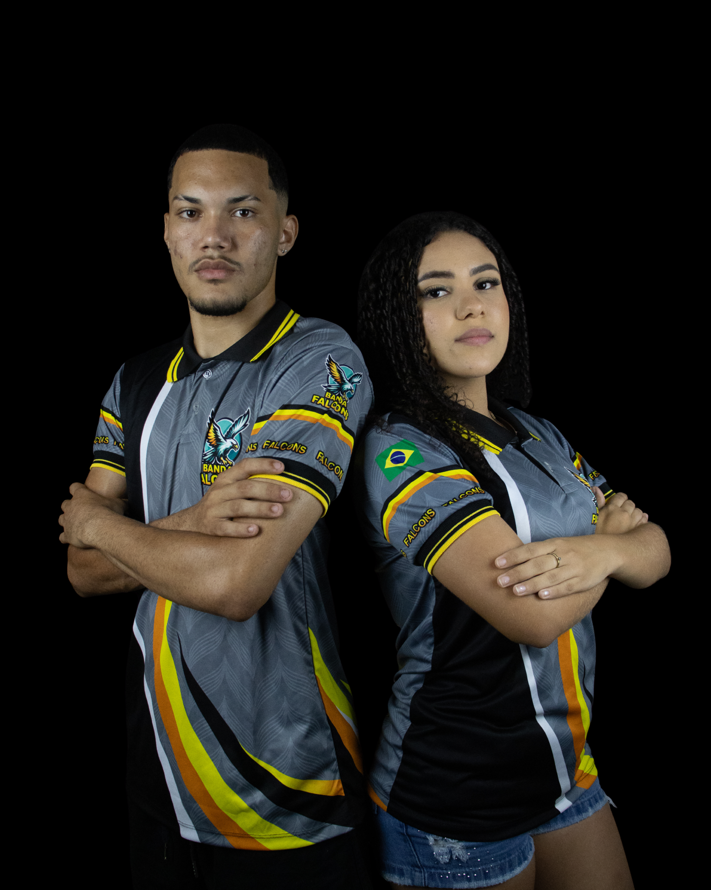

Ensaios
Personalizados
- Poses, olhares e movimentos pensados para transmitir sentimento e profissionalismo.

O desafio foi fotografar uma história que já existe, sem precisar inventar poses. Em um ensaio personalizado, cada gesto, olhar e detalhe revela a personalidade de quem está diante da câmera. O objetivo é transformar momentos naturais em imagens que tenham significado. 📸✨




